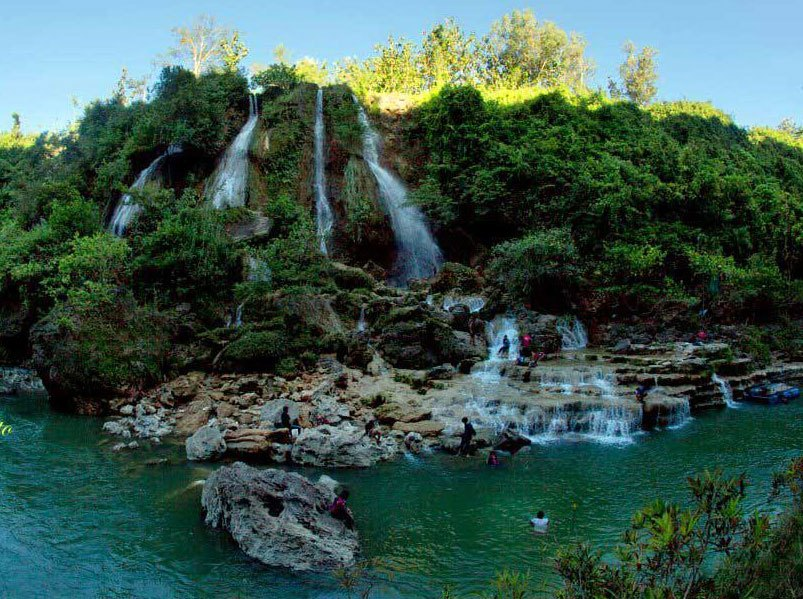

Sri Gethuk
Terletak di antara ngarai Sungai Oya yang dikelilingi areal persawahan nan hijau, Air Terjun Sri Gethuk selalu mengalir tanpa mengenal musim. Gemuruhnya menjadi pemecah keheningan di bumi Gunungkidul yang terkenal kering. Terletak di Desa Wisata Bleberan, Air Terjun Sri Gethuk menjadi salah satu spot wisata yang sayang untuk dilewatkan. Untuk mencapai tempat ini Anda harus naik kendaraan melewati areal hutan kayu putih milik PERHUTANI dengan kondisi jalan yang bervariasi mulai dari aspal bagus hingga jalan makadam. Memasuki Dusun Menggoran, tanaman kayu putih berganti dengan ladang jati yang rapat. Sesampainya di areal pemancingan yang juga berfungsi sebagai tempat parkir, terdapat dua pilihan jalan untuk mencapai air terjun. Pilihan pertama yakni menyusuri jalan setapak dengan pemandangan sawah nan hijau berhiaskan nyiur kelapa, sedangkan pilihan kedua adalah naik melawan arus Sungai Oya.
Air terjun Sri Gethuk merupakan obyek wisata yang terpadu dengan Goa Rancang Kencono, situs purbakala, bumi perkemahan dan area memancing di Dusun Menggoran. Fasilitas di tempat wisata ini belum banyak karena kawasana ini masih merupakan obyek wisata yang terpencil dan baru. Fasilitas penunjang yang berada di tempat tersebut adalah gethek atau perahu tradiisional yang dapat disewa oleh wisatawan untuk menyusuri areal persawahan dan anak tangga untuk mencapai lokasi ayr terjun ini. Bagi anda yang tiidak mau bersusauh-susah maka pilihan tepat untuk sampai di lokasi air terjun adalah menaiki perahu tersebut yang ruteny menyusuri areal persawahan dan pengemudi selanjuittnya akan akan melewati arus sungai Oya hingga sampai di kaki air terjun.